2022年读书小结
写在前面
2022年，为了倒逼输出，专门开了一个知识星球，跟公众号同名，当时想法简单，就想把涌现的想法，读过的书，记录下来，用日积月累的输出，对抗时间的流逝，因此，就有了这次的阅读小结。
有了输出目标，就不再追求读数量，也不再随机散读。采取主题阅读，重点以人物传记为主，读了近30本传记，每读一本，尽量都写上一则书评卡，少时三五百，多时1000字以上。有些读后印象深刻的，则写成一篇三千字以上的读书笔记，盘了一下，总共写了十来篇。
输写的过程，我总能体会到其中的乐趣，沉浸其中，越发喜欢上敲字的声音，像风铃般清脆，悦耳。少了窗外的纷扰，多了精神上的自由。也就更加理解科幻作家阿西莫夫的做法，他不管外面阳光如何耀眼，都要把窗帘拉得黑黑的，开着台灯，把自己置身在打字机中，忘乎所有，一天连续工作12小时都不觉得累。
一共阅读的书籍，纸质书和电子书，近40多本，写了卡片的有30多本。凭着过往写的卡片和笔记，整理读过的书籍。
书类：认知、教育
书1:《认知天性》
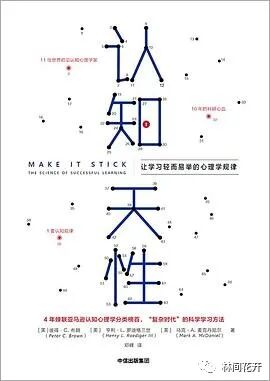
第一张书评卡，写了797字，读完后写成了一篇读书笔记。最早接触到这本书，是在朋友发的樊登读书会链接，当时没在意，直到开智的「人生资本课」也选了这本书，才开始读。
「认知天性」集结了11位前沿认知科学家，10年的科研心血。他们从脑神经科学研究成果中，推导出的一套有利于大脑的学习法则，这本书在亚马逊认知心理学分类榜首蝉联4年，是一本不可多得的「如何科学学习」的书。如果站在大脑神经科学的角度重新看这本书，就会发现有新的角度，学会的本质是什么？是强化大脑神经元的链接，刺激大脑思考和记忆。
笔记详见：学习不靠天赋，靠正确的方法
书2:《批判社会教育学九讲》
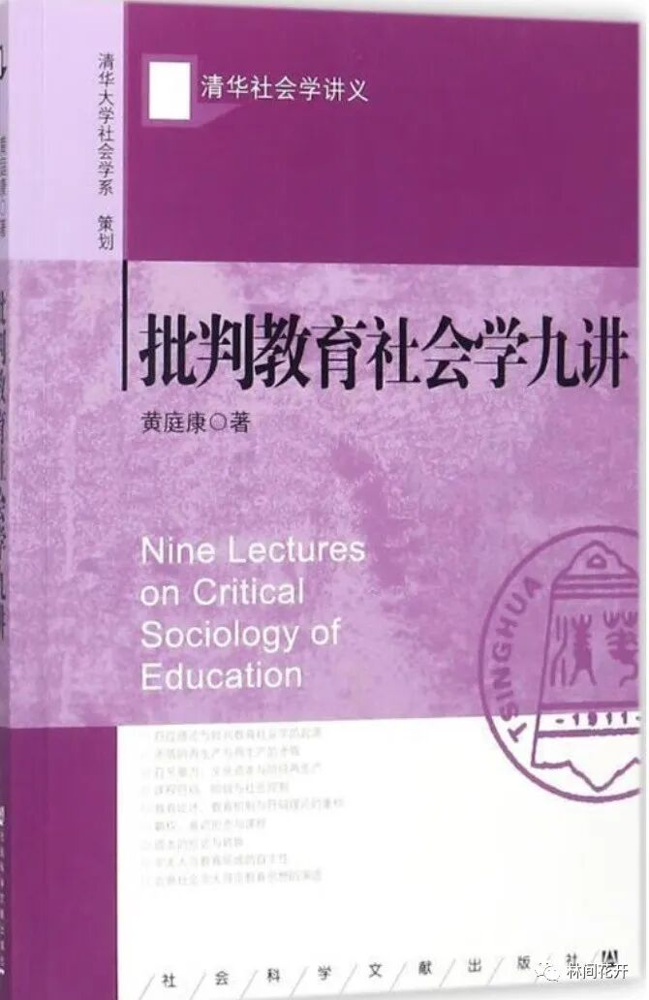
开智「人生资本课」指定教材。二次阅读。这本书是香港学者黄庭康2013年在清华大学的研究讲稿，编辑成一本书，共九讲。重点阅读了第三、七、八讲，这三章是法国社会学家布迪厄三本专著「再生产」、「资本的形式」、「学术人」中的内容，他是研究文化资本的权威物，在书中，定义了什么是文化资本，以及文化资本的三种形式：身体形式、客观形式、制度形式。强调文化资本是一种符号资本。在经济资本无法直接以再生产的方式巩固权力关系时，精英们把经济资本用在了文化资本上，传承给下一代。
从中获得的启发：教育是不公平的，看似人人都可以从高考中获得出路，但精英家庭和中产或是草根家庭的资本总量不同，精英家庭更有钱，有权，有关系给小孩争取到更多的资源。
书3:《社会资本：关于社会结构与社会行动的理论》
开智「人生资本课」的书单。这是社会学家林南过往的论文合集，他在书中提出了社会资本的理论模型。总体上，这本书是讲如何科学搞关系，书中的一张图是关键，提及了社会资本的两大内容：投资和激活。
1、投资社资本
需了解四个关键核心：结构位置，社会资本呈金字塔结构，顶端比底端的社会资本更好，权力更大，声望更高，但也更难企及；网络位置，越靠近社会关系的桥梁，获得的社会资本越好；内嵌的社会资源；行动目的，投资的社会资本，最终要用起来。
2、激活社会资本
激活后带来的两个回报，，一个是工具性回报，包括财富、权力、名声三个方面的回报；一个是情感回报，包括身体健康和心理健康的回报。强关系能带来情感回报，弱关系能带来工具性回报，所以找工作可以多挖掘弱关系。
书4:《如何高效学习》
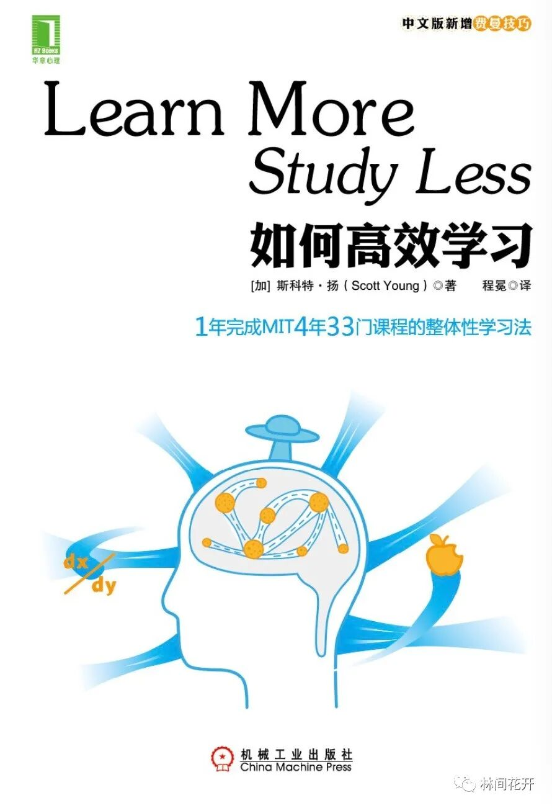
如何用最少的时间学习，获得最大的学习效果？在这本加拿大学霸斯科特·扬写的「如何高效学习」中，可以找到答案，他用真实例子告诉我们，哪怕智商不高，用学习好方法，也能取得好成绩。作者提出了整体性学习法，他用这套方法，10天内完成了线性数学的学习，1年学习4年MIT课程的“不可能任务”。
人类的大脑有上数亿个神经元交织在一起，相互影响，就如一张网一样，学习不能只靠单纯背存储信息，那是计算机做的事情，任何的知识都不可能是孤岛。不同于死记硬背，整体性学习法把知识看成是有结构有组织的网，知识与知识之间是有关联的。
书5:《人生模式》
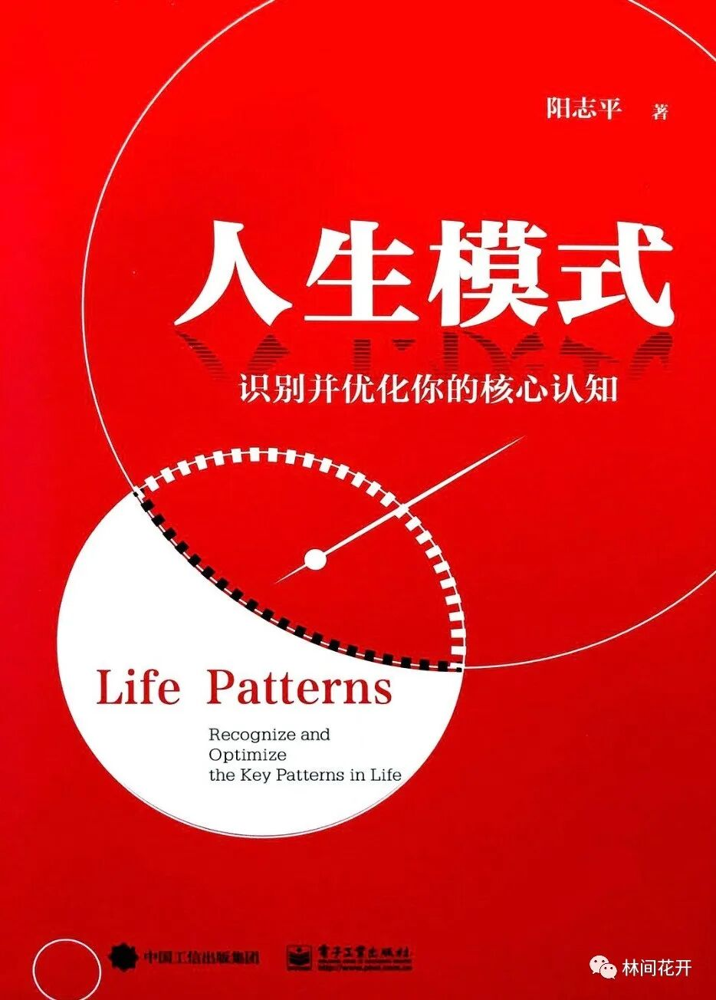
二刷。阳老师2019年出版的一本文集，他用「人生模式」这个概念，把20年来他写过的文章，系统地整合在一起。书中向我们展示了前沿认知科学的研究成果和人类历史上智者的经验，介绍了人生发展中的关键模式，以此，让后来者少走些弯路。这次重读，原本只是拿书中的文章来拆解写作策略，却沉浸在文章中，欲罢不能。或许是上多了开智的课，再来阅读，更有感觉了。
书类：人物传记、人性
书6:「心理传记学手册」
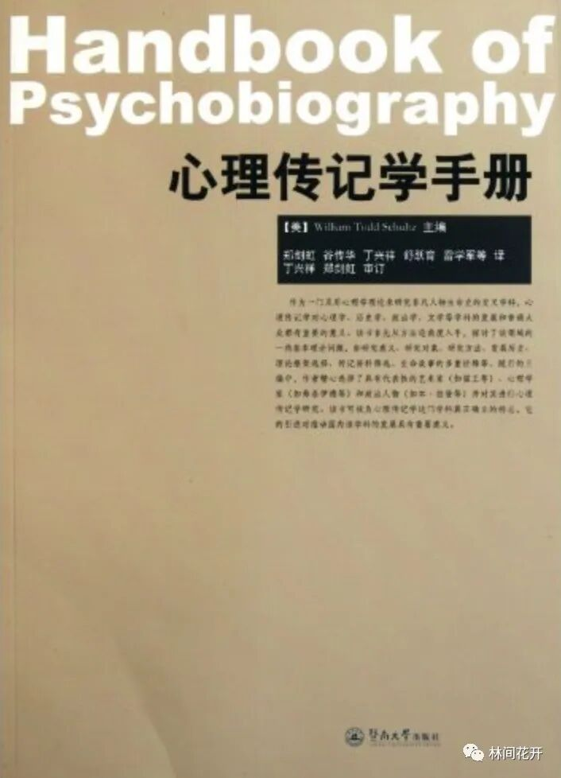
去年计划给家里老人写传记，列了一批阅读书目，其中就有「心理传记学手册」。这是一本以心理学研究方法的心理传记书籍，书中借助此模型对历史上的典型人物进行分析。这本书的主编是舒尔茨，他是国际传记领域的重要人物之一，写过大量心理传记学相关的论文、书籍、书评等。
如何阅读传记资料？舒尔茨提出了「原型情景」模型，用这个模型，可以快速从大量的传记资料中获得心理学的发现，模型涉及五个核心指标：
1、清晰、具体、情感强度；
2、贯通（渗透）
3、发展性危机
4、家庭冲突
5、拒绝接受现状
书中用这个模型分析了三类人：艺术学家猫王、普拉斯等；心理学家弗洛伊德、奥尔波特、埃里克森等；政治家小布什、本拉登等。用这个模型也可以阅读任何其他的人物传记，找出核心事件。
书7:《大家一起来做口述历史》
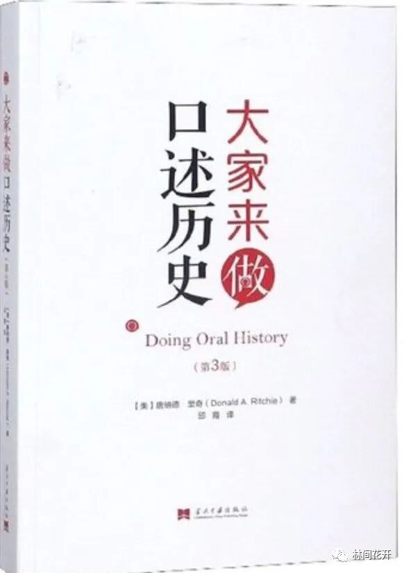
阳老师给传记班同学开的一本教材，是一本还不错的写口述史的手册。集口述历史理论、方法、实践于一体百科式手册，全书采用一问一答，读来轻松，有料。
书中回答了如何成立项目，如何找到可以做口述史的人？如何做准备？如何采访？等。带着对口述史的疑问，知道了做口述史有两种采访框架，一种是按年代，一种是按主题，采取哪一种方式访谈，也有策略，如果侧重的是人生故事，那么按年代，也就是阳老师说的按人生成周期线索采访；如果是聚焦于某一事件，就按主题式的采访会更好。
笔记详见：如何给老人写传记
书8:《富兰克林自传》
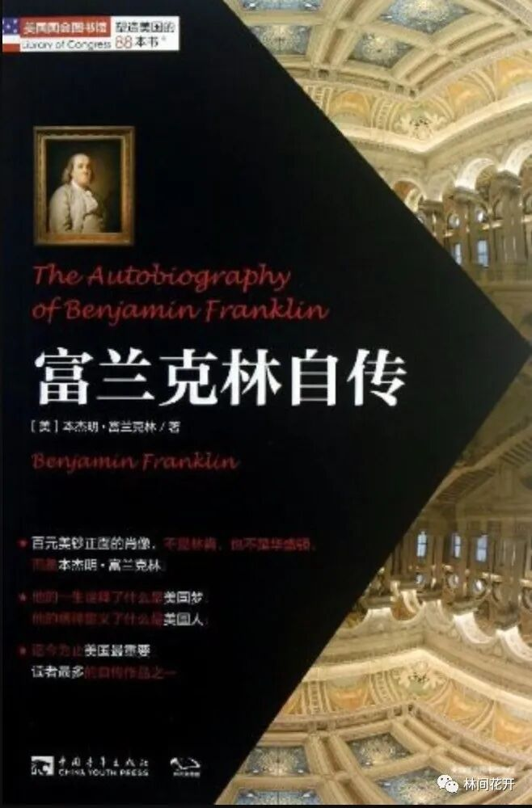
富兰克林在1771年动笔，1788年才完成的一本自传，历经17年之久。书中富兰克林以拉家常的方式，讲叙他的读书写作之道，以及他是如何成为富兰克林的，语言朴实，却鼓舞了一代又一代的美国人。忘了是第几次刷这本书，每次读都有不一样的收获。读完写成了一篇读书笔记，这次从富兰克林的身份认同去看他的一生。
笔记详见：富兰克林的富兰克林｜人物传记
书9:《张爱玲私心录》
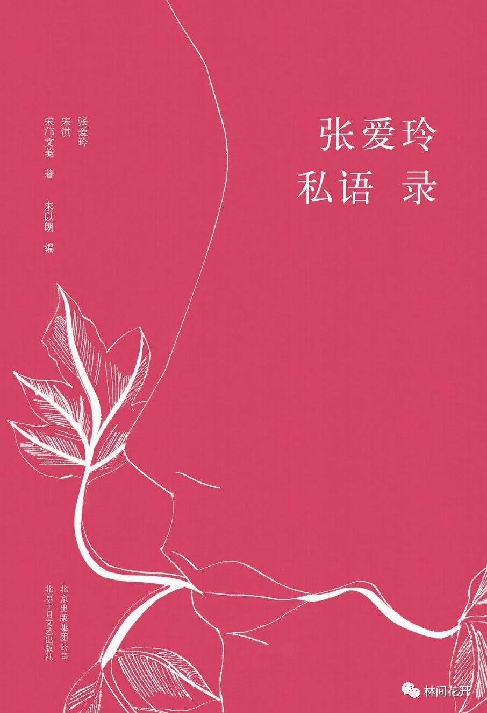
在这之前，对张爱玲是有误读的，认为她如坊间所传的那样，孤芳自赏、冰冷、话少、不擅长情感表达。看了她写给宋淇夫妇的几百封书信，读到了一个不同过往的张爱玲：天真健谈、语带机锋，还有点啐啐念，表起白来，炙热、毫不掩饰。信中处处是对邝美云的体贴、赞赏、爱和依赖，在她死后，文学遗产全赠给了没有血缘关系的宋淇夫妇，一点都没给亲弟弟，落下不顾手足的骂名。如果想了解真实的张爱玲，不妨读这一本。
书10:《米塞斯回忆录》
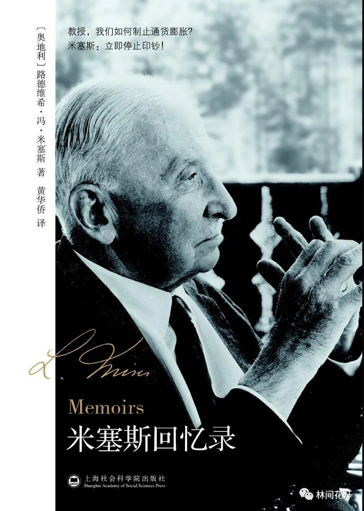
很少读经济学的书，却读了米塞斯的传记，这本是他从欧洲到美国，处在人生低谷时所写。这本书更像是他个人思想史，展示的是他在工作中的公众形象，一字不谈私人生活。幸好他的妻子在后来出版了「米塞斯夫人回忆录」，补上了他个人生活的一面，了解到他在出版「人的行为」前后发生的事情，两位得意弟子哈耶克和罗斯巴德分别在这两本书中写了序。
米塞斯是奥地利经济学派第三代领军人物，也是一个伟大的思想者、一个伟大的老师（创办了私人研讨会，得弟门生有哈耶克和罗斯巴德，两人都是经济学最重要的人物）。他一生崇尚古典自由主义，被美国「自由」杂志评为自由至上主义的世纪人物。
阅读真的是赶着阅读走，读完米塞斯两本自传后，接着读了「罗斯巴德传」和「奥地利学派的大师们」两本书，更加全面了解了奥地利经济学家的情况，后一本讲述了15位奥地利经济学家。
书11:《弗洛伊德传》
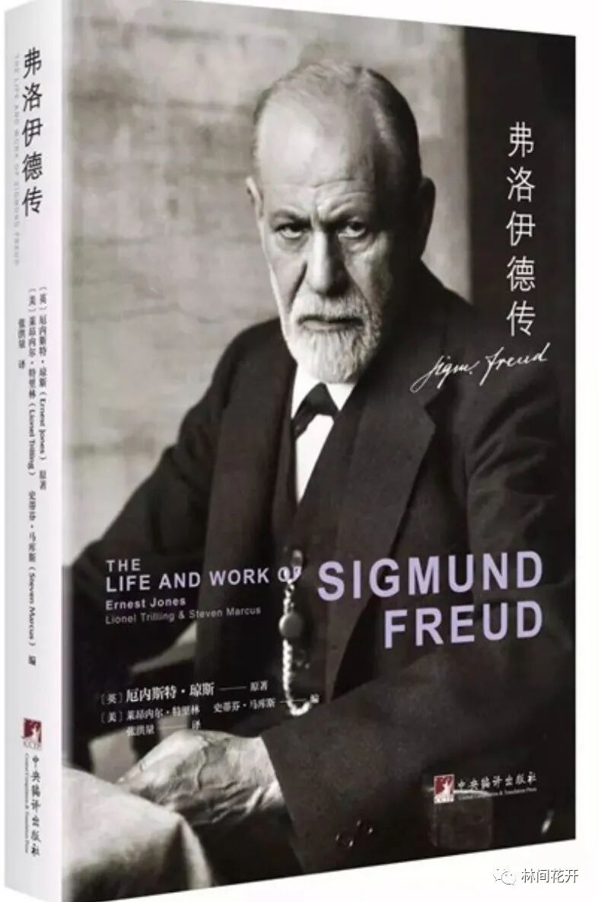
开智「人性大师课」指定教材。
作者厄内斯特.琼斯是弗洛伊德交往40多年好友，他参与了弗洛伊德的历史，也是早期精神分析圈子的核心成员。这本书跟其他抹黑弗洛伊德的形象不同，作为好友，更多的是还原一个真实客观的弗洛伊德。琼斯说，他写这本传记的目的，不是想让它成为了一本畅销传记，而是如实记录弗洛伊德，试图把弗洛伊德的人性、人生经历与他的思想发展联系起来。
读了弗洛伊德传后，还刷了荣格的自传，发现心理学家都不太爱写传记，对隐私极其保护。
在「人性大师课」这门课中，最大的收获是，阳老师用他提出的「人性系统论」框架快速解读弗洛伊德，这是一种高效的人物传记阅读方法，在之后的传记阅读中，我有意识地使用这个阅读框架。
笔记详见：重新认识弗洛伊德
书12:《童年与社会》
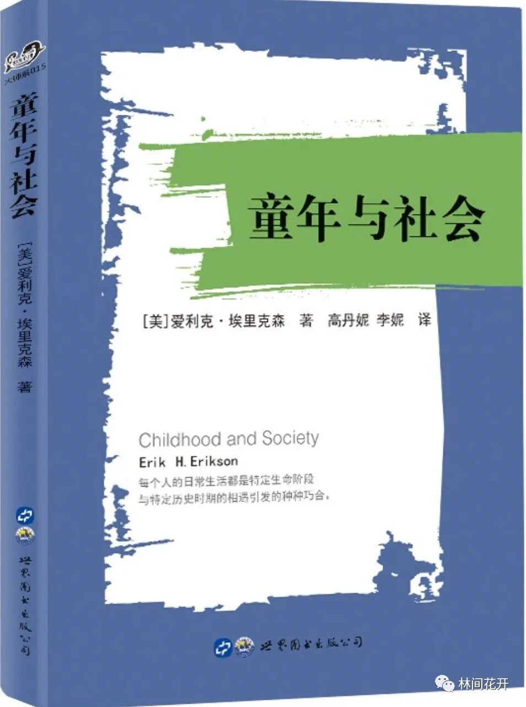
每个心理学家提出的理论，大都可以看成他们的自传经历，正如这本「童年与社会」的作者埃里克森，一生都在为身份认同苦苦探索，最后提出了「同一性」理论。这本书可以看成是他用「同一性」理论和「人生八阶段」理论的一次实践。
笔记详见：走进埃里克森
书13:《人格心理学》
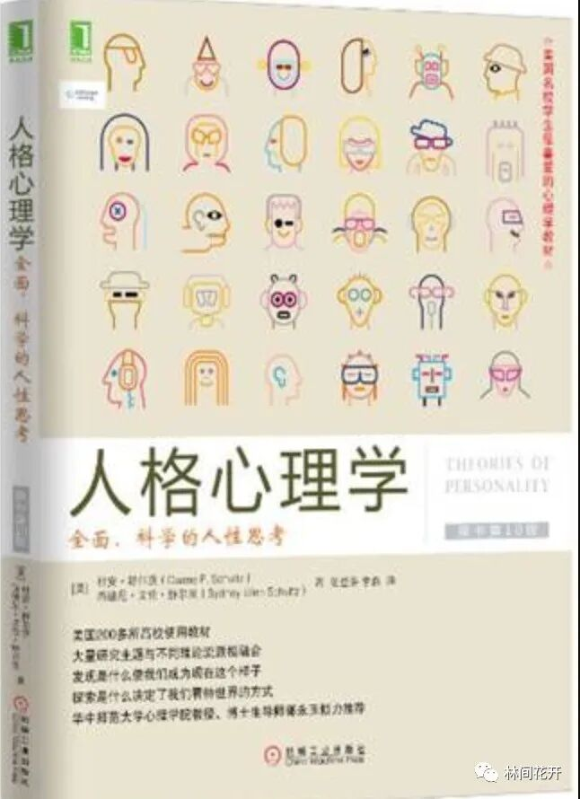
开智「人性大师课」指定教材。讲述了心理学大师是何以成为大师的过程，用时间线串起他们的人生故事，有八卦，有理论，读着不像教材，不枯燥，越读越有趣。
如何学人性，不妨跟着这11位心理学大师走。书中提到了开创精神分析流派弗洛伊德，受他理论影响的后继者荣格、霍妮、阿德勒、埃里克森等，也有跟弗洛伊德唱反调的乔治.凯利，他是认知心理学流派的开创者；提出人格心理学并奠定了其地位的奥尔波特，还有行为主义斯金纳，社会学习理论提出者班杜拉等人。重点学习了弗洛伊德、埃里克森、班杜拉、斯金纳、罗杰斯、凯特等6位人性大师。
笔记详见：学习人格心理学，绕不开的心理学大师
书14:《个人构念心理咨询实务》
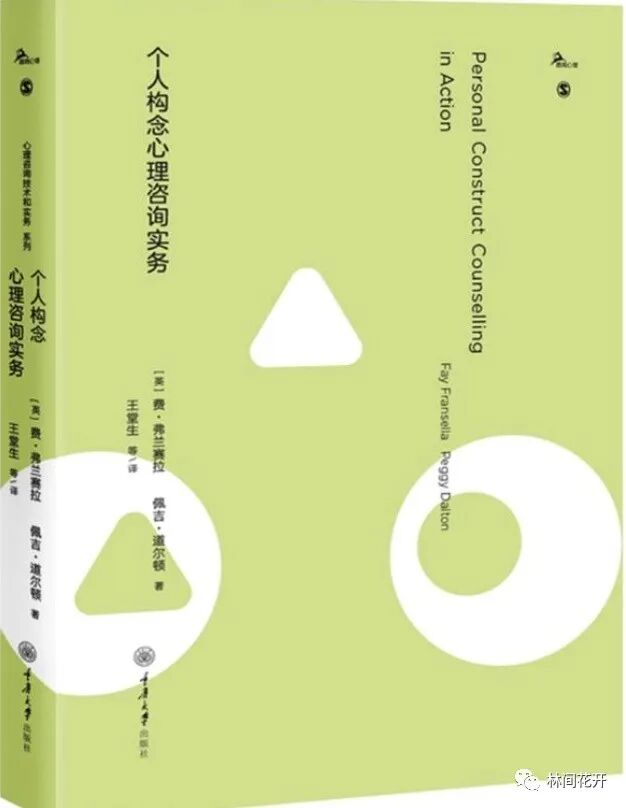
开智「人性大师课」指定教材。主要讲个人构理念在心理咨询中的实践，个人构念是乔治.凯利在1955年提出，「构念」一词也有翻译成「结构」，阳老师在行为分析课中翻译成「概念」，更好理解。比起直接读凯利的毕生之作「个人结构心理学」，1200页，这本难度适中。
作者是费·弗兰赛拉，她是凯利之后的第二代个人构念心理学的灵魂人物，她在博士攻读的方向就是个人构念心理学，当时还获得了凯利遗孀的授权，复印了凯利留下的译稿，才有了这本书。
书15:《超越自由与尊严》
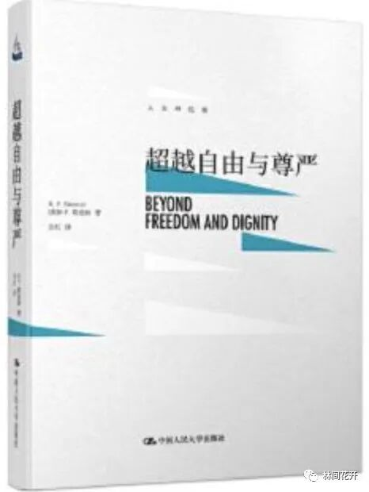
开智「人性在师课」指定教材。
这本书可看成是斯金纳行为主义的思想论述。在书中，他提出了操作化条件反射理论，在他看来，人是没有绝对的自由与尊严，人是受外显行为结果影响的机器人，给点强化物，人就会做出反应。斯金纳的理论优点明显，强调了环境与行为的结果，他的很多观点已经无形中在消化在我们的生活，但缺点也明显，完全忽略了个人的意识这一块。读完斯金纳的作品，想读他的传记。
书16:《人生舞台》
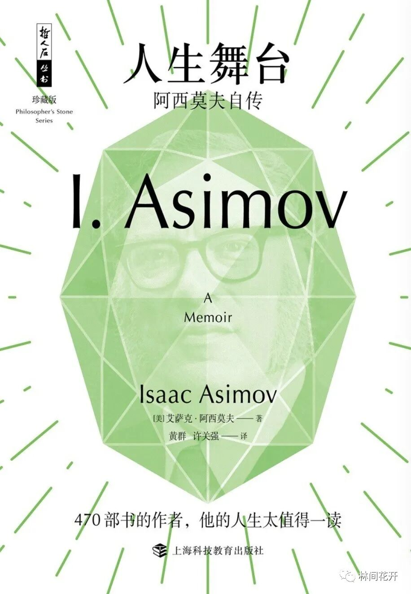
在2022年倒数最后一天，输出最后一篇读书笔记，是阿西莫夫的「人生舞台」，这本书是他生前写的第三卷自传。
相比两卷自传，他这次没有严格按照时间顺序，而是按他的记忆思绪，一个话题接着一个话题，娓娓道来他的原生家庭，童年为伴的书籍，求学，成长，写作，演讲，找工作，两次婚恋等。
如果不仔细阅读，会觉得这只是一部记录人生的流水账，但认真读，166篇中，每一篇都值得阅读，写得真诚、朴实，尤其是讲到他的写作，他视写作为生命，从童年的糖果店生活开始，他习惯了每天五点钟起床，这样的习惯持续一生。
面对疾病和死亡，他一点都不害怕，因为他为未来写了很多的科幻作品，关于未来的世界，他早已体验过，而且他每天把时间花在创作中，即使不能活到老年，他在创作中享受到生活的快乐，这对他来说，已是最大的价值。
笔记详见：多产作家阿西莫夫｜人物传记
书17:《丽泽忆往：刘家和口述史》
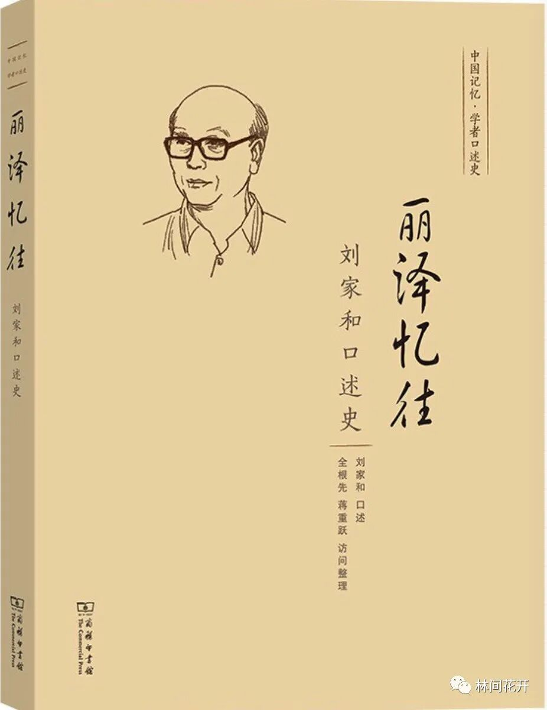
阳老师在传记班中开出的书籍。这是一本优秀的个人口述史案例，结构可用来参考给老人写传记。讲述者刘家和是一名著名的历史学家，中西贯通。他讲述了个人的人生学术史，分成两部分，上半部分是「往事回忆」，以时间线回顾，讲述他的故乡，他的家庭，以及他的求学之路，先后考取江南大学、南京大学、辅仁大学，至今留在北师大任教。在国难临头时，他立下了「学术报国」的大志，从他的人生轨迹来看，一路离不开学术。下半部分是「丽泽卮言」，在学术部分的问题，关于他做历史比较研究的思考。
书18：《居里夫人》
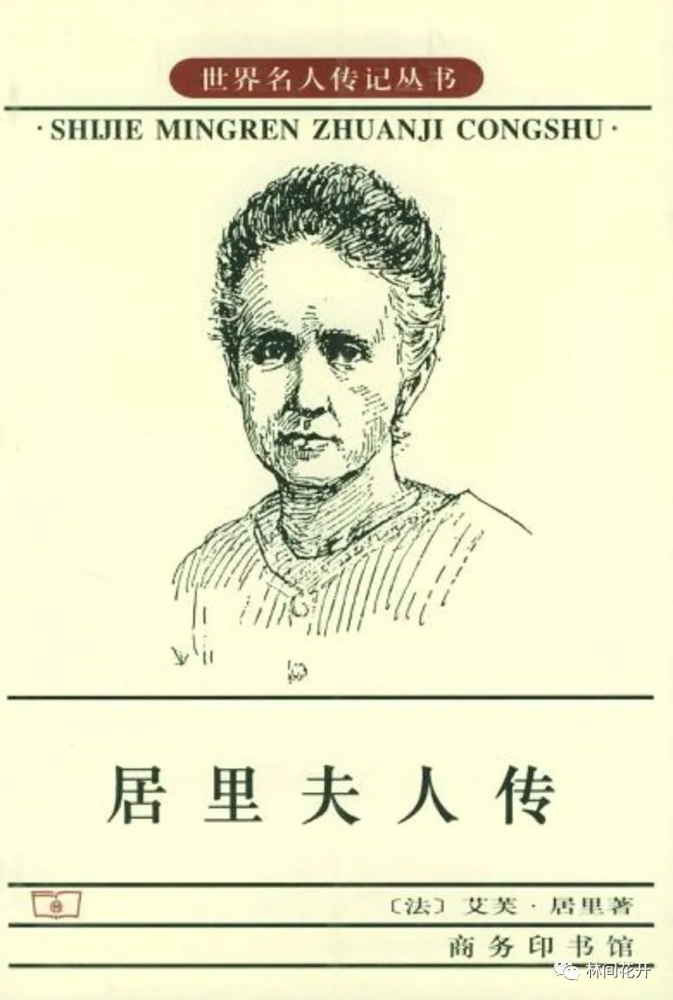
由居里夫人的女儿艾芙.居里所写，回顾了居里夫人求学阶段、研究阶段、个人生活等心路历路，在讲科学的同时，穿插了她个人的情感，对祖国波兰的情感，还有她与夫君比埃尔.居里相遇相知相伴的过程，可惜两人在一起的时间，实在过短，只有12年。
比埃尔在47岁那年，一场车祸夺走他的性命，那是居里夫人人生中最黑暗的一段经历，她没有写日记的习惯，却在那个时候写下对比埃尔无尽的思念。
深受感动的还是居里夫人对待科学的态度，无论她在何种恶劣环境，都能以钢铁般的毅力追求科学，看得比生命还重。
亲人写的传记，多少还是美化成分，完全不提居里夫人与法国物理学家保罗·朗之万，那段有疾无终的恋情。
书19:《我的兄弟王小波》
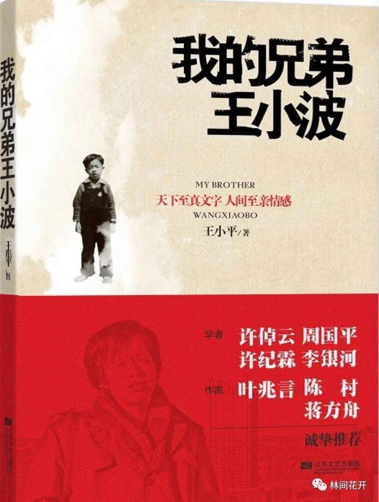
王小波哥哥王小平所写，记录王小波早年记忆，一直写到他结婚。前言明确，书中没有奇闻逸事，也没有戏剧性的成分。在哥哥的笔下，王小波是这样的一个人：小时候是家人和老师眼中的傻波子，但他哥哥笃定地保证，王小波一定能出给人惊喜，出爆款。如他所料，在王小波写了一部部作品后，得到了验证。在哥哥眼中，王小波还是一个有独特品味，对世界的滋味过于敏感，以致常常被魇住，保持着童心的一个人。
为什么王小波深受读者的喜爱？书中提到了一点：
小波之所以受到人们的热爱，不光是因为他的文字技巧，也不是因为他建立了森严的思想营垒，而是因为他独特的感觉和品味。他以灵敏的鼻子捕捉到从这个世界里透出的，他人难以分辨的种种气味，并把他们制成了「香水」。
书20:《巴黎隐士》
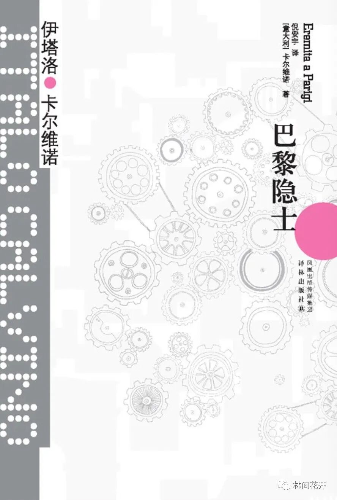
卡尔维诺生前没有留下传记。只能借助他写的作品，读他的文字去了解他。
这本是卡尔维诺自述性文集，收入了十九篇或长或短的文章，以日记、回忆短文、访谈、短评等形式记录了卡尔维诺生命历程的精华。既有卡尔维诺对家乡意大利的眷恋，在美国的旅行记录，巴黎的隐士生活，也有他的文学访谈，可以当作了解卡尔维诺的一份宝贵材料。
为什么选择巴黎隐居？书中同名的一篇文章写过，卡尔维诺眼中的巴黎，是早期从书本上读到的巴黎，虚幻存在，经由阅读而熟悉的一个城市，这是一个内在场景的城市。巴黎距离都灵不远不近，他在那安了家，但没有职责，无需扮演任何角色的一个地方。借他在「看不见城市」里的一段话来表述，他是用「死人看世界」的方式在看城市：
有一个城市建在桩架上，居民居高临下看着自己的不在场，用这种方式了解自己，观察一个本该有我而我不在的地方。就像一名摄影师在镜头前摆好姿势以后跑去按快门，拍下少了他的先前那个地方。
书21:《杨绛传》
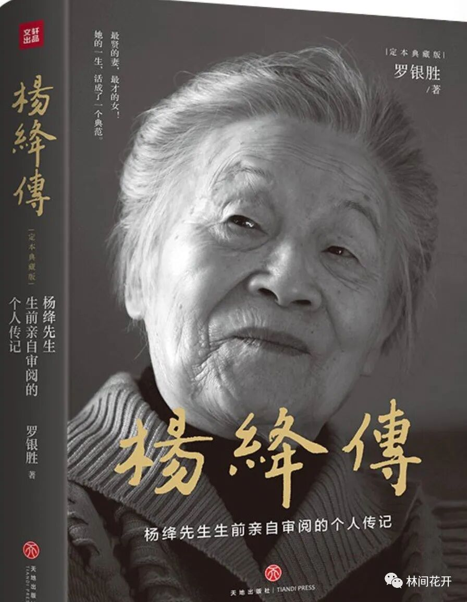
图片：历史上要找出一个有趣又有智识的女性，杨绛肯定可以算一个。这本传记由罗银胜所写，杨绛亲自审阅。作者在阅读了大量杨绛口述的一手资料和采访后，写出了杨绛的百年人生。书中按时间线，写了杨绛的童年成长、家庭变迁、求学历程、文学创作、以及她和钱钟书的爱情故事。在2016年，她以105岁的高龄去世，放下世间的一切，赶赴「我们仨」的团聚。书的内容全面，但大多在别处看过，没有太多惊喜。
她安静、高贵、优雅，又有一颗生动又有趣的灵魂，哪怕她不在人世了，读着这本传记，透过文字，仍然感受到杨绛传递的坚韧的品格和力量感。
书类：写作、诗歌、故事集
书22:《一个孩子的诗园》
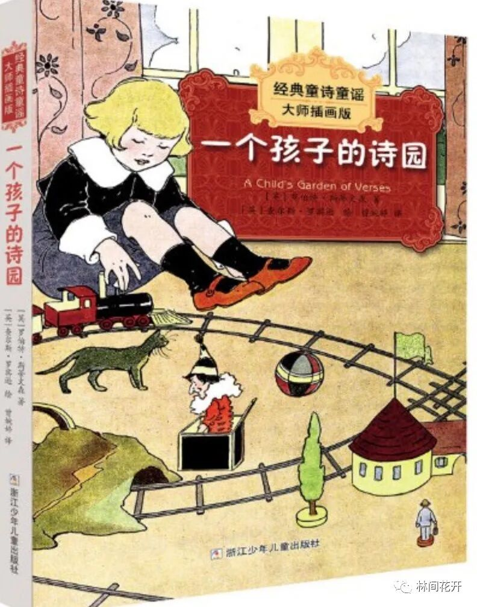
英国诗人罗伯特.斯蒂文森写的一本童诗集，一共66首，每一首短小、诙谐、富有想象力。在英国，畅销百年，是一本国宝级诗集，几乎每个家庭必备，是不可多得的儿童学习语言的最佳教材。
这本书有段时间成了我跟娃的睡前故事，每晚一首，书中的小孩单纯、有趣、好奇心重，一张床单也能玩出花样和乐趣。借助小孩的眼光重新看世界，世界是如此有趣、丰富多彩。其实大人也是有童真的视角，只不过在成长的过程，一点点丢失了。
读了这本诗集，开始用童诗记录小孩的日常，积累了20多首。
书23:《古典风格》
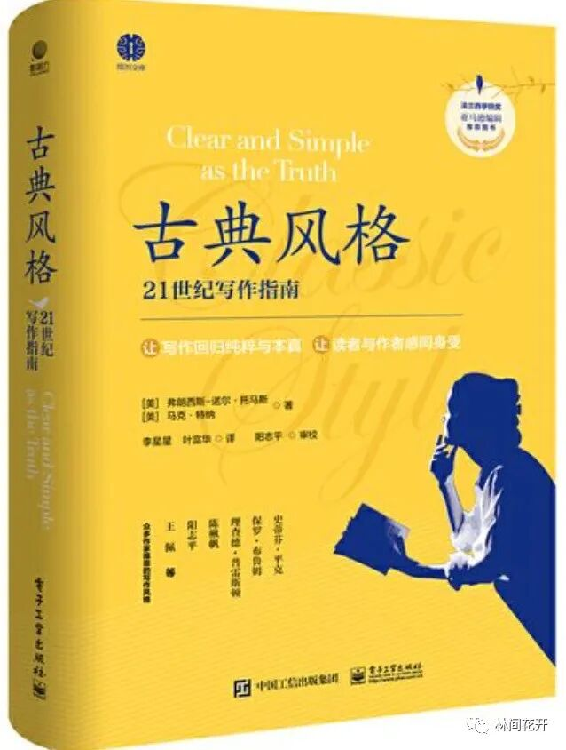
在读认知语言学家史蒂芬.平克写的《风格感觉》一书时，就知道了古典风格的写作风格，直到两年后才读到这本《古典风格》。由两位认知科学家所写，开智写作教练星星翻译，这是一本21世纪写作指南。
书中提出写作的道——写作风格。在众多风格中，认知科学家最为推崇古典风格。怎么才算是古典风格？从风格的五要素出发：真相、场景、呈现、角色、思想与语言。这本书不教写作技巧，只教写作风格，这是学写作最难的一点。下笔之前，写作已开始，所以在掌握写作术之前，先学习写作的道。
文字会赶着文字走，读完「古典风格」，重刷了「风格感觉」和「风格练习」跟风格主题有关的书。前者是认知及语言学家史蒂芬.平克所写，对怀特经典之作「风格的要素」的一次致敬，他受益于「风格的要素」，强调写作要朴实、简洁、清晰、真挚，但他又认为这本经典写作指南，有些过时了，不能满足于21世纪人们的写作，在他作家妻子的鼓励，才有了「风格感觉」。二次阅读，我把重点放在第五章连贯之弧上。一篇文章出现问题，有可能是行文臃肿、学术味过重，也可能是晦涩难懂、高深莫测或是句子错综复杂、表述模糊不清，或是句子表达顺畅、简洁，单个句子看，没毛病，句与句串在一起，就支离破碎，让人无法理解前后意思，这些问题都是「不连贯」造成。
「风格练习」是法国作家雷蒙.格诺写的一本小册子，说是一本写作练习的书，不如说是一本语言游戏的书。书中的一个故事，用了99种风格讲述，有笔记体、隐喻、反溯、主观视角、造词、否定、简单过去时、漫不经心、十四行诗、电报体等。据说原先不止99种，为了不让读者厌烦，最后挑了99种。比起硬核的「古典风格」，我更喜欢「风格练习」这种小书，如能找上三五好友，挑几种风格演绎，将会蛮好玩。
书24:《中国故事》
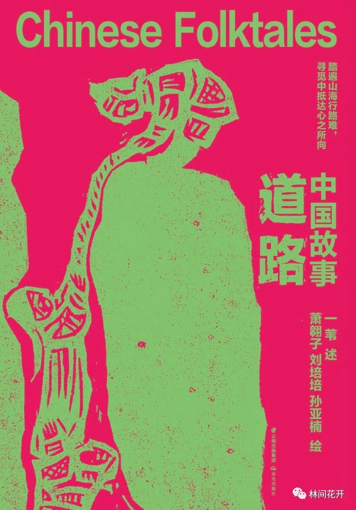
跟朋友借了套「中国故事」给小孩看，这套故事共有三卷，分别为道路、人间、万物，可以说是一套中国原汁原味的故事书。大人爱讲，小孩爱听，每晚一则，听到卖香屁的故事，两个小孩听了哈哈笑。
写在后面
有书陪伴的日子，是何等的富足。2023年，继续践行传记主题阅读，与历史上的智者做朋友。以输出带输入，用创作来唤醒对世界的热爱。